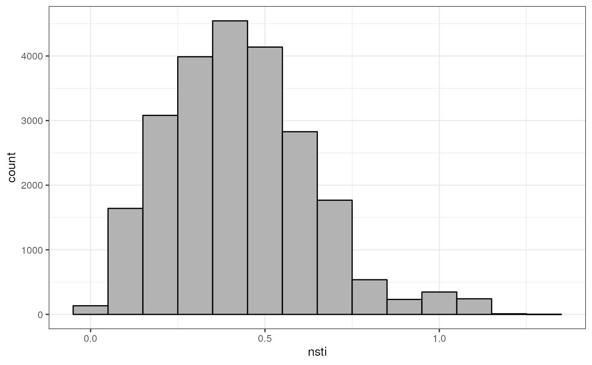
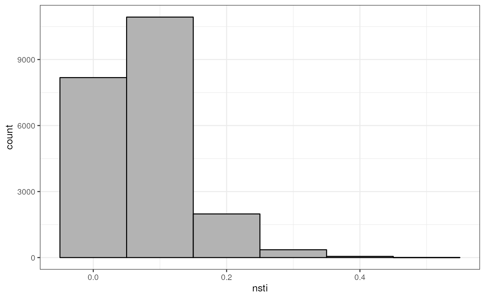

library(taxPPro)
library(castor)
library(ggplot2)
#> Error in get(paste0(generic, ".", class), envir = get_method_env()) :
#> object 'type_sum.accel' not found
ltp <- ltp()
tree <- ltp$tree
nsti_x |>
ggplot(aes(nsti)) +
geom_histogram(binwidth = 0.1, fill = 'gray70', color = 'black') +
theme_bw()
nsti_y |>
ggplot(aes(nsti)) +
geom_histogram(binwidth = 0.1, fill = 'gray70', color = 'black') +
theme_bw()
sessioninfo::session_info()
#> ─ Session info ───────────────────────────────────────────────────────────────
#> setting value
#> version R version 4.4.1 (2024-06-14)
#> os Ubuntu 22.04.4 LTS
#> system x86_64, linux-gnu
#> ui X11
#> language en
#> collate en_US.UTF-8
#> ctype en_US.UTF-8
#> tz Etc/UTC
#> date 2025-01-06
#> pandoc 3.2 @ /usr/bin/ (via rmarkdown)
#>
#> ─ Packages ───────────────────────────────────────────────────────────────────
#> package * version date (UTC) lib source
#> ape 5.8-1 2024-12-16 [1] RSPM (R 4.4.0)
#> bslib 0.8.0 2024-07-29 [1] RSPM (R 4.4.0)
#> cachem 1.1.0 2024-05-16 [1] RSPM (R 4.4.0)
#> castor * 1.8.3 2024-11-17 [1] RSPM (R 4.4.0)
#> cli 3.6.3 2024-06-21 [1] RSPM (R 4.4.0)
#> colorspace 2.1-1 2024-07-26 [1] RSPM (R 4.4.0)
#> desc 1.4.3 2023-12-10 [1] RSPM (R 4.4.0)
#> digest 0.6.37 2024-08-19 [1] RSPM (R 4.4.0)
#> dplyr 1.1.4 2023-11-17 [1] RSPM (R 4.4.0)
#> evaluate 1.0.1 2024-10-10 [1] RSPM (R 4.4.0)
#> farver 2.1.2 2024-05-13 [1] RSPM (R 4.4.0)
#> fastmap 1.2.0 2024-05-15 [1] RSPM (R 4.4.0)
#> fs 1.6.5 2024-10-30 [1] RSPM (R 4.4.0)
#> generics 0.1.3 2022-07-05 [1] RSPM (R 4.4.0)
#> ggplot2 * 3.5.1 2024-04-23 [1] RSPM (R 4.4.0)
#> glue 1.8.0 2024-09-30 [1] RSPM (R 4.4.0)
#> gtable 0.3.6 2024-10-25 [1] RSPM (R 4.4.0)
#> htmltools 0.5.8.1 2024-04-04 [1] RSPM (R 4.4.0)
#> htmlwidgets 1.6.4 2023-12-06 [1] RSPM (R 4.4.0)
#> jquerylib 0.1.4 2021-04-26 [1] RSPM (R 4.4.0)
#> jsonlite 1.8.9 2024-09-20 [1] RSPM (R 4.4.0)
#> knitr 1.49 2024-11-08 [1] RSPM (R 4.4.0)
#> labeling 0.4.3 2023-08-29 [1] RSPM (R 4.4.0)
#> lattice 0.22-6 2024-03-20 [2] CRAN (R 4.4.1)
#> lifecycle 1.0.4 2023-11-07 [1] RSPM (R 4.4.0)
#> magrittr 2.0.3 2022-03-30 [1] RSPM (R 4.4.0)
#> Matrix 1.7-0 2024-04-26 [2] CRAN (R 4.4.1)
#> munsell 0.5.1 2024-04-01 [1] RSPM (R 4.4.0)
#> naturalsort 0.1.3 2016-08-30 [1] RSPM (R 4.4.0)
#> nlme 3.1-165 2024-06-06 [2] RSPM (R 4.4.0)
#> pillar 1.10.0 2024-12-17 [1] RSPM (R 4.4.0)
#> pkgconfig 2.0.3 2019-09-22 [1] RSPM (R 4.4.0)
#> pkgdown 2.1.1 2024-09-17 [1] RSPM (R 4.4.0)
#> purrr 1.0.2 2023-08-10 [1] RSPM (R 4.4.0)
#> R6 2.5.1 2021-08-19 [1] RSPM (R 4.4.0)
#> ragg 1.3.2 2024-05-15 [1] RSPM (R 4.4.0)
#> Rcpp * 1.0.13-1 2024-11-02 [1] RSPM (R 4.4.0)
#> rlang 1.1.4 2024-06-04 [1] RSPM (R 4.4.0)
#> rmarkdown 2.29 2024-11-04 [1] RSPM (R 4.4.0)
#> RSpectra 0.16-2 2024-07-18 [1] RSPM (R 4.4.0)
#> sass 0.4.9 2024-03-15 [1] RSPM (R 4.4.0)
#> scales 1.3.0 2023-11-28 [1] RSPM (R 4.4.0)
#> sessioninfo 1.2.2 2021-12-06 [1] RSPM (R 4.4.0)
#> systemfonts 1.1.0 2024-05-15 [1] RSPM (R 4.4.0)
#> taxPPro * 1.0.0 2025-01-06 [1] local
#> textshaping 0.4.0 2024-05-24 [1] RSPM (R 4.4.0)
#> tibble 3.2.1 2023-03-20 [1] RSPM (R 4.4.0)
#> tidyselect 1.2.1 2024-03-11 [1] RSPM (R 4.4.0)
#> vctrs 0.6.5 2023-12-01 [1] RSPM (R 4.4.0)
#> withr 3.0.2 2024-10-28 [1] RSPM (R 4.4.0)
#> xfun 0.49 2024-10-31 [1] RSPM (R 4.4.0)
#> yaml 2.3.10 2024-07-26 [1] RSPM (R 4.4.0)
#>
#> [1] /usr/local/lib/R/site-library
#> [2] /usr/local/lib/R/library
#>
#> ──────────────────────────────────────────────────────────────────────────────